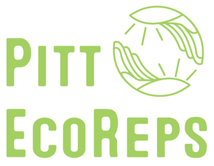

- numpy
- matplotlib

A Quick Story Time!
import string
import js
import numpy as np
def getandpost(*args,**kwargs):
env = 0
lighting = document.querySelector("[name='lights']:checked").id
showering = document.querySelector("[name='shower']:checked").id
washing = document.querySelector("[name='wash']:checked").id
temperature = document.querySelector("[name='temp']:checked").id
transportation = document.querySelector("[name='tsnpt']:checked").id
charge = document.querySelector("[name='phone']:checked").id
following = document.querySelector("[name='follow']:checked").id
if lighting == "on":
env = env + 110.07
if showering == "ten":
env = env + 7.44
if washing == "wait":
env = env + 9.81
elif washing == "go":
env = env + 4.9
if temperature == "cold":
env = env + 9.81
elif temperature == "hot":
env = env - 9.81
if transportation == "walk":
env = env + 216
elif transportation == "bus":
env = env + 125.55
if charge == "psm":
env = env + 21.2
if following == "yup":
env = env + 5
js.localStorage.setItem("env",env)